We investigate how to use an
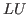
factorization with the classical lsqr routine for solving overdetermined sparse least squares problems. Usually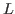
is much better conditioned thanWe consider the overdetermined full rank LLS problem
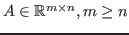
and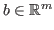
. When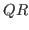
factorization or the normal equations are not always suitable because the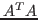
can be dense. A common iterative method to find the least squares solution
with other sparse linear systems, preconditoning techniques based on
incomplete factorizations can improve convergence. One method to
precondition the normal equations ( ) is to perform an
incomplete Cholesky decomposition of
(e.g., RIF preconditioner,
Benzi, 2003).
) is to perform an
incomplete Cholesky decomposition of
(e.g., RIF preconditioner,
Benzi, 2003).
When
and its Cholesky factorization are denser than  , it is
natural to wonder if the
factorization of
, it is
natural to wonder if the
factorization of  can be used in solving
the least squares problem. In this paper we use an
factorization of
the rectangular matrix
can be used in solving
the least squares problem. In this paper we use an
factorization of
the rectangular matrix
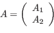
where is unit lower trapezoidal and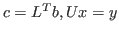
, and we can apply CG iterations on (Least squares solution using factorization has been explored by several authors. Peters and Wilkinson (1970) and Björck and Duff (1980) give direct methods. This work follows Björck and Yuan (1999) using conjugate gradient methods based on factorization, an approach worth revisiting because of the recent progress in sparse factorization. The lsqrLU (2015) algorithm presented here uses a lower trapezoidal returned from a direct solver package. Here we use an
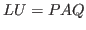
factorization from shared memory SuperLU (X. LI 2005), comparing iteration with to the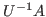
iteration suggested by Saunders. Because other direct solver packages offer scalable sparse factorizations, it appears likely that the algorithm used here can also be used to solve larger problems. The rate of linear convergence for CG iterations on the normal equations is
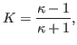
where
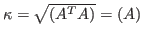
and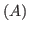
denotes the 2-norm condition number of